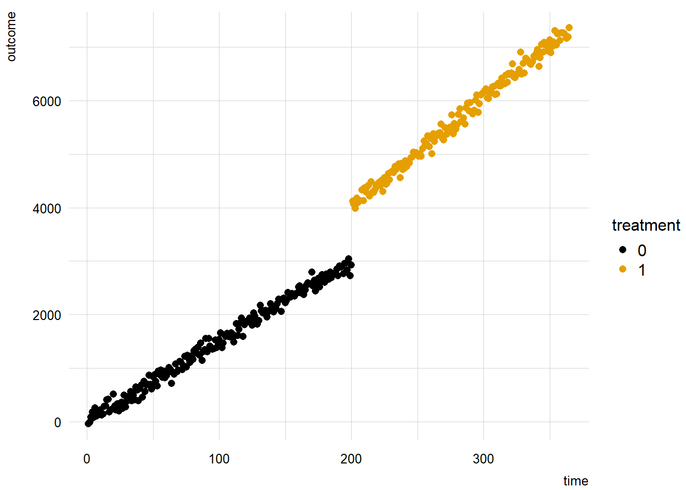
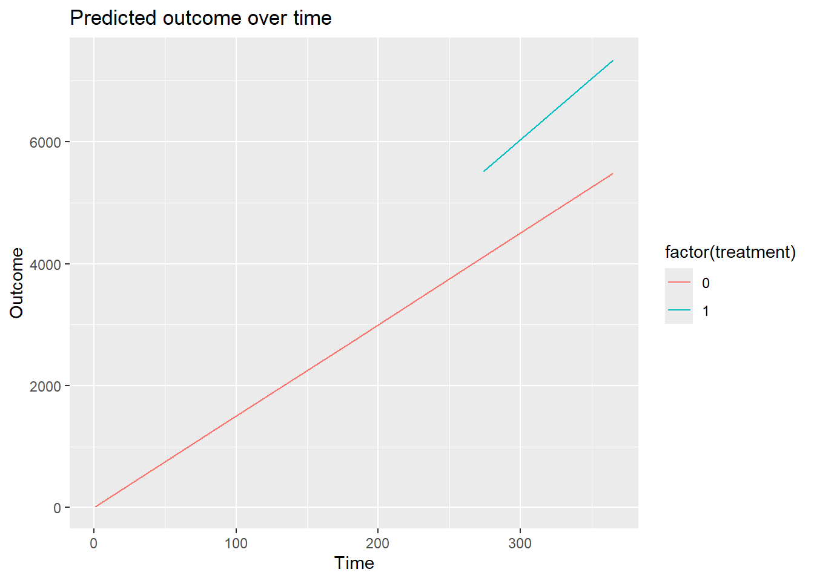

library(marginaleffects)
library(tinyplot)
tinytheme("ipsum")
set.seed(48103)
# number of days
n <- 365
# intervention at day
intervention <- 200
# time index from 1 to 365
time <- c(1:n)
# treatment variable: 0 before the intervention and 1 after
treatment <- c(rep(0, intervention), rep(1, n - intervention))
# outcome equation
outcome <-
10 + # pre-intervention intercept
15 * time + # pre-intervention slope (trend)
20 * treatment + # post-intervention intercept (shift of 10)
5 * treatment * time + # steeper slope after the intervention
rnorm(n, mean = 0, sd = 100) # noise
dat <- data.frame(outcome, time, treatment)中断时间序列
Interrupted Times Series · marginaleffects 官方文档中译
来源：Vincent Arel-Bundock，marginaleffects 官方文档 · Interrupted Times Series （GitHub 仓库，源文件
website/bonus/interrupted_time_series.qmd，revision870f15a0）。 网站内容 © 2025 Vincent Arel-Bundock, All Rights Reserved；marginaleffects软件代码依 GPL-3 许可。 本页为中文翻译，非原文，经原作者授权翻译并发布。 本页的 R 代码块由本站在渲染时真实执行；Python 代码块未在本站执行（本机 Quarto 未配置 Jupyter，reticulate 也未配置 Python），仅作静态展示，页面中不含由这些 Python 代码生成的输出。 本页有 1 个 R 代码块未在本站执行：该块只为本页的 Python 代码块准备虚拟环境，而这些 Python 块已降级为静态展示。代码按原样展示，页面中不含它们的输出。
间断时间序列（Interrupted Time Series，ITS）分析是一种被广泛使用的研究设计，其目的是通过考察结局指标随时间发生的变化，来推断某个离散干预或事件所产生的影响。它在许多领域都有应用，包括公共卫生政策（例如评估疫苗接种运动的效果）和教育领域（例如评估课程改革）。ITS 背后的核心思路是：利用已经在收集的数据，在某个已知的时间点识别出一个明确的“中断”（例如某项政策开始实施的时刻），然后比较该中断前后结局指标的表现。
尽管 ITS 非常有用，但它也带来了不小的方法学和实践挑战。与实验性或准实验性方法不同，ITS 依赖于一些非常强的假设，即结局在干预前的轨迹具有连续性或可预测性。未被观测到的混杂事件以及政策的渐进式推行都可能违反这些假设，使得将变化完全归因于该中断变得更加困难。
ITS 与常用的双重差分（difference-in-differences，DiD）方法有一些相似之处：在 DiD 方法中，处理组的结局会与未处理的比较组的结局进行对比。要满足 DiD 得出可信推断所需的各项假设是极具挑战性的，该领域近期的方法学进展也印证了这一点 (Roth 等 2023)。可以说，ITS 更难做对，因为它通常只依赖单一的时间序列，因而缺乏真正的对照组。
本文展示如何使用 marginaleffects 包来分析一个简单的 ITS 场景。为了说明这一点，我们来看一个由以下代码模拟生成的数据集：
import numpy as np
import pandas as pd
import statsmodels.formula.api as smf
from marginaleffects import avg_slopes, comparisons, predictions
from plotnine import (
aes,
facet_wrap,
geom_line,
geom_point,
ggplot,
labs,
scale_color_manual,
theme_minimal,
)
dat = r.dat.copy()
dat["time"] = dat["time"].astype(int)
dat["treatment"] = dat["treatment"].astype(int)
n = int(r.n)
intervention = int(r.intervention)数据如下所示：
library(tinyplot)
tinyplot(outcome ~ time | treatment, type = "p", palette = "okabeito",
data = transform(dat, treatment = factor(treatment)))
import pandas as pd
from plotnine import aes, geom_point, ggplot, labs, scale_color_manual, theme_minimal
dat = r.dat.copy()
dat["time"] = dat["time"].astype(int)
dat["treatment"] = dat["treatment"].astype(int)
dat_plot = dat.copy()
dat_plot["treatment"] = dat_plot["treatment"].astype(str)
okabe_ito = [
"#E69F00", "#56B4E9", "#009E73",
"#F0E442", "#0072B2", "#D55E00",
"#CC79A7", "#999999"
]
plot = (
ggplot(dat_plot, aes(x="time", y="outcome", color="treatment"))
+ geom_point()
+ scale_color_manual(values=okabe_ito[:2])
+ theme_minimal()
+ labs(x="Time", y="Outcome", color="treatment")
)
plot.show()分析者通常会使用带有乘法交互项的线性回归模型来对这类数据建模，并专门构造一个“自干预以来的时间”变量：
\[ \text{Outcome} = \beta_0 + \beta_1 \text{Time} + \beta_2 \text{Treatment} + \beta_3 \text{Time since intervention} + \varepsilon \]
使用 marginaleffects，我们甚至不需要构造这个特殊变量。1 我们只需要拟合这个数学上等价—而且更简单—的模型：
\[ \text{Outcome} = \alpha_0 + \alpha_1 \text{Time} + \alpha_2 \text{Treatment} + \alpha_3 \text{Time} \times \text{Treatment} + \varepsilon \]
mod <- lm(outcome ~ time * treatment, data = dat)
summary(mod)
Call:
lm(formula = outcome ~ time * treatment, data = dat)
Residuals:
Min 1Q Median 3Q Max
-261.551 -69.865 0.908 66.543 308.257
Coefficients:
Estimate Std. Error t value Pr(>|t|)
(Intercept) 4.4518 13.6298 0.327 0.744
time 15.0023 0.1176 127.574 <2e-16 ***
treatment -17.6430 47.0542 -0.375 0.708
time:treatment 5.1581 0.1961 26.303 <2e-16 ***
---
Signif. codes: 0 '***' 0.001 '**' 0.01 '*' 0.05 '.' 0.1 ' ' 1
Residual standard error: 96.02 on 361 degrees of freedom
Multiple R-squared: 0.9982, Adjusted R-squared: 0.9982
F-statistic: 6.804e+04 on 3 and 361 DF, p-value: < 2.2e-16import statsmodels.formula.api as smf
dat = r.dat.copy()
dat["time"] = dat["time"].astype(int)
dat["treatment"] = dat["treatment"].astype(int)
mod_py = smf.ols("outcome ~ time * treatment", data=dat).fit()
print(mod_py.summary())接下来，我们可以使用 marginaleffects 包来回答一系列科学问题。举例来说，在第 200 天，有干预和没有干预时的预测结局分别是多少？
p0 <- predictions(mod, newdata = datagrid(time = 199, treatment = 0))
p1 <- predictions(mod, newdata = datagrid(time = 200, treatment = 1))
p0
time treatment Estimate Std. Error z Pr(>|z|) S 2.5 % 97.5 %
199 0 2990 13.4 223 <0.001 Inf 2964 3016
Type: responsep1
time treatment Estimate Std. Error z Pr(>|z|) S 2.5 % 97.5 %
200 1 4019 15 268 <0.001 Inf 3989 4048
Type: responseimport pandas as pd
import statsmodels.formula.api as smf
from marginaleffects import predictions
dat = r.dat.copy()
dat["time"] = dat["time"].astype(int)
dat["treatment"] = dat["treatment"].astype(int)
mod_py = smf.ols("outcome ~ time * treatment", data=dat).fit()
p0_py = predictions(
mod_py,
newdata=pd.DataFrame({"time": [199], "treatment": [0]}),
vcov=False
)
p1_py = predictions(
mod_py,
newdata=pd.DataFrame({"time": [200], "treatment": [1]}),
vcov=False
)
print(p0_py)
print(p1_py)这表明，在第 200 天，干预会使结局大约增加 1028.9766399 个单位。这两个预测值之间的差异在统计上显著吗？
comparisons(mod, variables = "treatment", newdata = datagrid(time = 200))
time Estimate Std. Error z Pr(>|z|) S 2.5 % 97.5 %
200 1014 20.2 50.2 <0.001 Inf 974 1054
Term: treatment
Type: response
Comparison: 1 - 0import pandas as pd
import statsmodels.formula.api as smf
from marginaleffects import comparisons
dat = r.dat.copy()
dat["time"] = dat["time"].astype(int)
dat["treatment"] = dat["treatment"].astype(int)
mod_py = smf.ols("outcome ~ time * treatment", data=dat).fit()
comparisons(
mod_py,
variables="treatment",
newdata=pd.DataFrame({"time": [200], "treatment": [0]}),
vcov=False
)在干预前后，结局方程关于时间的平均斜率分别是多少？
avg_slopes(mod, variables = "time", by = "treatment")
treatment Estimate Std. Error z Pr(>|z|) S 2.5 % 97.5 %
0 15.0 0.118 128 <0.001 Inf 14.8 15.2
1 20.2 0.157 128 <0.001 Inf 19.9 20.5
Term: time
Type: response
Comparison: dY/dXimport statsmodels.formula.api as smf
from marginaleffects import avg_slopes
dat = r.dat.copy()
dat["time"] = dat["time"].astype(int)
dat["treatment"] = dat["treatment"].astype(int)
mod_py = smf.ols("outcome ~ time * treatment", data=dat).fit()
avg_slopes(
mod_py,
variables="time",
by="treatment",
eps=0.01,
vcov=False
)这表明，干预之后结局的增长速度更快。
许多分析者喜欢通过绘制对照组的预测结局，将 ITS 分析的结果可视化，因为他们知道，干预之后的这些预测值是反事实的。要做到这一点，可以先针对 time 和 treatment 的所有组合计算预测值，再剔除不需要绘制的观测值，最后把数据交给像 ggplot2 这样的绘图包处理。
library(ggplot2)
p <- predictions(mod, variables = c("time", "treatment"))
p <- subset(p, time > intervention | treatment == 0)
ggplot(p, aes(x = time, y = estimate, color = factor(treatment))) +
geom_line() +
labs(title = "Predicted outcome over time",
x = "Time",
y = "Outcome")
import numpy as np
import pandas as pd
import statsmodels.formula.api as smf
from marginaleffects import predictions
from plotnine import aes, geom_line, ggplot, labs
dat = r.dat.copy()
dat["time"] = dat["time"].astype(int)
dat["treatment"] = dat["treatment"].astype(int)
intervention = int(r.intervention)
mod_py = smf.ols("outcome ~ time * treatment", data=dat).fit()
time_vals = np.sort(dat["time"].unique())
grid = pd.DataFrame(
[(t, tr) for tr in [0, 1] for t in time_vals],
columns=["time", "treatment"]
)
p_py = predictions(mod_py, newdata=grid, vcov=False).to_pandas()
p_py = p_py[
(p_py["time"] > intervention) |
(p_py["treatment"] == 0)
].copy()
p_py["treatment"] = p_py["treatment"].astype(str)
plot = (
ggplot(p_py, aes(x="time", y="estimate", color="treatment"))
+ geom_line()
+ labs(title="Predicted outcome over time", x="Time", y="Outcome")
)
plot.show()
Roth, Jonathan, Pedro H. C. Sant’Anna, Alyssa Bilinski, 和 John Poe. 2023. 《What’s trending in difference-in-differences? A synthesis of the recent econometrics literature》. Journal of Econometrics 235 (2): 2218–44. https://doi.org/https://doi.org/10.1016/j.jeconom.2023.03.008.
事实上，分析者不应该构造这个特殊变量。问题在于，
time和time_since这两个变量是相关的，但当我们把它们硬编码进去时，R并不知道它们之间的数学关系。↩︎